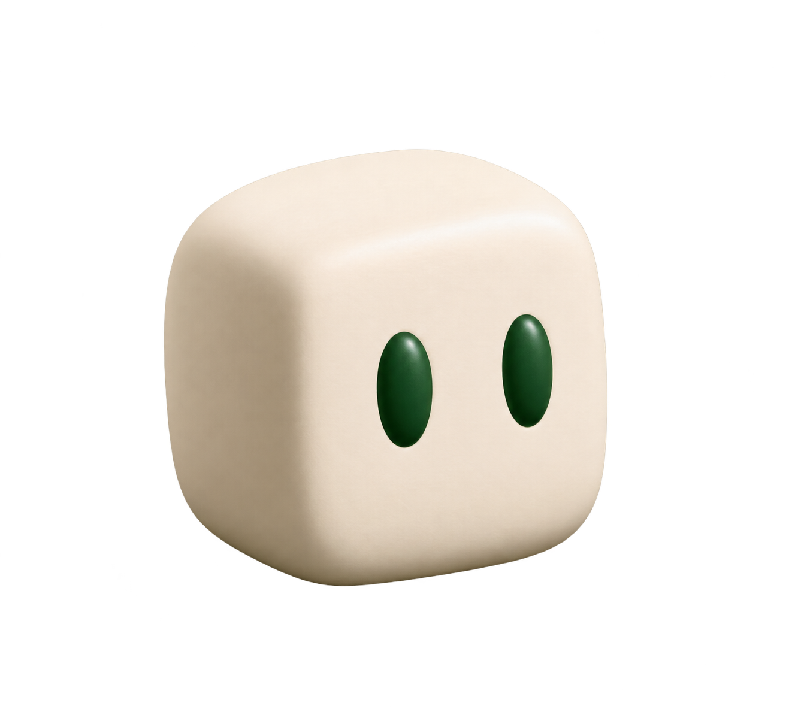

METAL WORKS / DESIGN CONCEPT
図面の先へ。
From drawing to form
ABOUT THIS CONCEPT
金属加工工場
試作や小ロット加工の相談を受け付ける。
- 雰囲気
- 黒 × オレンジ
- ページ構成の例
- 加工の紹介 / 強み / 対応内容 / 相談の流れ / よくある質問 / 見積相談
加工部品や工程の写真に差し替える想定。設備・精度などの実績は創作しません。
写真は架空の制作例用に生成した素材です。完成したLPや受注実績ではありません。

ページを準備しています
METAL WORKS / DESIGN CONCEPT
From drawing to form
ABOUT THIS CONCEPT
試作や小ロット加工の相談を受け付ける。
加工部品や工程の写真に差し替える想定。設備・精度などの実績は創作しません。
写真は架空の制作例用に生成した素材です。完成したLPや受注実績ではありません。